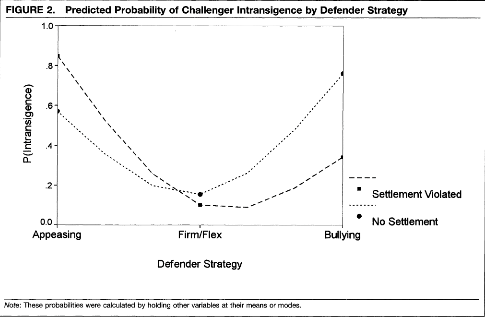

收录于合集

罪与罚：规范在危机谈判中的作用
作者： Gelpi Christopher， 默森国际安全研究中心主任，俄亥俄州立大学和平研究与冲突解决系主任，政治学教授。主要研究方向为国际军事化冲突的根源和解决国际冲突的策略。
编译： 孟晓宇（国政学人编译员，山东大学东北亚学院硕士）
来源： Gelpi, Christopher. “Crime and punishment: The role of norms in crisis bargaining.” American Political Science Review 91.2 (1997): 339-360.
导读
现实主义范式以其对国际无政府状态、国家利益和相对权力的聚焦，在过去五十年中主导了国际关系和安全事件的讨论。然而，现实主义对冷战结束解释的不足，促使一些学者寻找替代的范式来对现实主义进行补充或替代。 特别是，部分学者开始认为冷战的崩溃是苏联和东欧外交政策制定者的信念和思想发生变化的结果，而不是对全球权力分配变化的反应。 这一发现促使理论家构建了植根于规范性信念和理念以及物质能力影响的国际政治理论。然而，在使现实主义范式复杂化之前，必须调查规范和理念是否真的对国家行为有重大的独立影响。特别是，必须确定规范是否会影响军事冲突中的行为，因为这类争端是国际关系现实主义解释的核心。
本文检验了一个命题——行为规范可以影响身陷安全相关冲突中的国家行动。 具体而言，作者研究了解决安全相关争端的规范构建，及其对之后的军事化互动的影响。作者认为，争端的解决从两个重要方面改变了之后的危机谈判： 首先，它们作为规范性的参照，通过确定争端的解决办法减少了对未来的恐惧，并通过定义一组双方都认为非法的行为，改变对以后的危机谈判行为的解释。其次，争端解决协议会让违规国家付出名誉代价。 本文分析了从1929年至1979年间出现的122次再次启动的国际危机，对以上论点与危机谈判的现实主义理论进行了检验。作者发现有一种假说得到了强有力的支持，即国家能够也确实构建了规范性标准来指导其在国际危机中的行为，而现实主义范式下的危机谈判理论只得到了部分支持。
01
理论与经验问题
作者对国际规范的分析侧重于“合法性”。如果一项协议被视为合法，则意味着缔约方既承认遵守其规定的义务，也承认其他各方有权强制遵守该协议，即便使用武力。如果一项国际协议是合法的，那么它所定义的广泛行为标准可以称为规范。 从描述的意义上讲，规范是指行为的规律性，即行为人通常的行为方式，它通常是指在一个较长时期内形成的行为模式。从规定的意义上说，规范是指行为人应该采取的行为方式，这并不意味着频繁或通常的行为。在本文中，作者只涉及规范的规定意义。
本文主要研究在合法争端解决中体现的违反安全规范的行为。 其分析集中在重新启动的国际危机中的行为。在每一个案例中，都是一个国家发起了一场争端，该争端要么在达成合法争端解决协议的情况下得到解决，要么在没有达成合法争端解决协议的情况下得到解决，然后其中一个国家就同一问题重新发起争端。第一个威胁或采取军事行动改变先前结果的国家被称为重新挑起争端的挑战者，而防卫者则是挑战者的威胁或行动所针对的对象。在每一种情况下，防卫者都被迫使用某种谈判的策略，试图说服挑战者让步。最后，每一个争议都可以通过以下三种方式之一来解决:(1)挑战者仍然不妥协，迫使防守方做出让步;(2)挑战者接受妥协;或(3)挑战者放弃推翻现状的努力。 作者重点讨论挑战者对防卫者谈判策略的反应。
02
规范理论与危机谈判
合法的争端解决使防卫者更容易保护双方商定的现状，原因有两个：首先，既存的争端解决协议使胁迫策略显得更合法，威胁更小，这改变了挑战者对防卫者谈判行为的解释。其次，既存的争端解决协议为挑战者创造了巨大的声誉成本。
2.1 作为规范性参照的争端解决协议
争端解决协议将作为规范性参照来塑造谈判策略的解释。争端解决协议向缔约双方提供了两个重要信息改变了以后出现的危机的情景。首先，这些协议向每个国家传达了这样一个信息——其对手从根本上来说并不是敌对的。国际政治的无政府性质使得我们很难确定其他国家的真正偏好和意图。这种普遍的不确定性往往引起国家决策者的强烈恐惧，特别是在安全事务方面。而争端解决协议可以作为一个焦点，使每个国家相信其对手并非一成不变地咄咄逼人，从而打破这种冲突的螺旋式上升。对对手意图的了解改变了对以后的危机谈判行为的解释。威胁和潜在的攻击行为将不再被归类为攻击意图的标志。其次，争端解决协议通过为缔约双方定义一系列被禁止的行为，引入了合法性的概念。国际政治的无政府性使得“对”和“错”的概念都不是描述国家行为的有用类别。但是，通过建立合法的争端解决协议，禁止一套特定的行为，缔约双方在其关系中建立了一种规范，使它们有了解释行为的新类别。
2.2 作为声誉制约因素的争端解决
**
**
争端解决协议除了作为规范性的参照外，还会给挑战者造成名誉损失。 如果国家领导人不遵守承诺，国际受众可能会向他们施加成本。作者假设违反争端解决协议的名誉成本将在很大程度上取决于受害方的反应。如果防卫者没有回应，那么挑战国就会因为至少三个原因而遭受相对较少的声誉损失：首先，缺乏强有力的反应将限制国际社会对违法行为的关注；其次，如果防卫者没有强烈反对，那么其他人可能会认为这是对单方面修改和解协议的默许；第三，在强制执行之前的和解协议缺失的情况下，其他人很难推断挑战者对其国际承诺的重视程度。根据相同的逻辑，如果防卫者已积极尝试执行该协议，那么挑战国的声誉代价将大得多。
2.3 危机谈判的现实主义假设
**
**
那么在没有既存的争端解决协议的情况下，挑战者将如何应对防卫者的谈判策略呢？以往关于危机谈判的研究有三种策略：一是绥靖策略，它提供让步以满足挑战者的要求；二是坚定但灵活的战略，通过抵制挑战者的要求并威胁报复，同时提供替代的妥协解决协议，施加适度的强制性压力；三是欺凌策略，这是最具强制性的策略。在挑战者发起挑战之后， 绥靖传递了一种防卫者软弱的表象，因为这表明防卫者避免战争的愿望超过了保护其安全利益的决心。 在这种情况下，挑战者可能会将这场危机视为改善地位的机会。因此，安抚很可能会让挑战者更加坚持颠覆现状。 然而，以坚定但灵活的战略为代表的适度强制性的回应，不会引发防卫者对侵略的恐惧，更有可能说服挑战者让步。最后，欺凌行为不如坚定但灵活的立场那么成功，因为它强调了防卫者的坚定立场。
由此，作者得出了基于现实主义范式的假设1:在没有既存的争端解决协议来指导谈判行为的情况下，绥靖策略会使挑战者高度坚持，坚定但灵活的策略会使挑战者不那么坚持，而欺凌策略会使挑战者高度坚持颠覆现状。这一假设产生于现有的现实主义学者，但这一论点是不完整的，其既忽略了规范作为参照的作用，也忽略了违反规范的声誉代价。
2.4 规范假设与危机谈判
**
**
虽然争端解决可以通过两种不同的方式影响危机谈判，即作为规范参照和声誉约束，但这两种方式都对违反解决协议后的危机谈判的性质作出了相同的预测。基于规范理论，作者进一步提出了以下三个假设。
假设2：当挑战者违反了争端解决协议，而防卫者以安抚和绥靖回应时，挑战者的坚持会高于没有既存争端解决协议的情况。
假设3：当挑战者违反了争端解决协议，而防卫者以欺凌策略回应时，挑战方的坚持会低于没有既存争端解决协议的情况。
假设4：当挑战者违反了争端解决协议，而防卫者以坚定但灵活的策略回应时，挑战者的坚持程度至少会和没有既存争端解决协议时一样低。
03
现实主义者的选择:理性胁迫理论
在检验关于规范影响的论点时，现实主义的威慑理论和强制理论是最有力的竞争者。因此，作者列出了一系列对危机结果的现实主义解释至关重要的变量，并将它们作为分析的控制因素:
(1) 防卫者的谈判策略。
(2) 军事能力的平衡。也许在任何处理国际冲突的现实主义方法中，最基本的变量是军事能力的平衡。
(3) 防卫者谈判策略和军事能力的综合运用。虽然相对军事能力上的劣势会对一个国家的行为产生一些影响，但如果更强大的国家没有表现出使用其能力的意愿，这种影响可能并不显著。当军事能力与高度强制性的谈判策略相辅相成时，它将更有效地争取让步。
(4) 防卫者拥有核武器。防卫者拥有核武器会大幅增加挑战者的成本，并降低了挑战者在战场上获胜的可能性。
(5) 利害关系的重要性。如果维持现状对防卫者有很大的利害关系，那么它将愿意付出相当大的代价来实现自己的目标，而默许挑战者改变现状的吸引力相对较小。
(6) 同时参与其它争议。如果防卫者将外交、政治和军事资源投入到另一争端中，那么它就不太可能战胜挑战者。
(7) 同一对手之间以往争端中的行为。在以前的危机中退缩，将被其他人视为一个可靠的信号，表明一个国家的解决能力很弱。
(8) 以往冲突的历史，如果挑战者与防卫者有过长期冲突，那么挑战者更有可能不妥协。
(9) 自上一次的两方争端以来，军事能力平衡的变化。如果军事能力的均势在以前的危机和现在的危机之间发生了变化，那么新兴的更强大的国家会取得优势。
04
研究设计与测量
本文将涉及违反既存争端解决协议的危机与涉及重新启动同一问题的争端但没有既存解决协议的危机进行了比较。 最终的案例是1929年至1979年间的122次国际危机，这些危机重新引发了之前的争端。对于每一案件，除了主要的挑战者和防卫者之外，其它一些国家也可能发挥辅助作用。这些问题之所以令人感兴趣，是因为它们可能会改变挑战者和防卫者之间的军事能力的平衡。因此，作者只在一个国家代表其中一个争议方采取或威胁采取某种直接军事行动时，才将其列为支持者。 一个例外是大国军事力量的直接介入，在这种情况下，危机的结果更多地受到大国行为的影响。因此大国被编码为防守方，而次要大国被编码为支持方。
检验结果有力地支持了作者关于规范对争端解决的作用的论点，印证了以上四个假设（如图2）。然而对现实主义控制变量的检验结果却是喜忧参半。虽然现实主义和规范理论都预测了图2中的这条关于守卫者谈判策略效应的曲线，但胁迫理论不能解释当以前的争端解决被违反时，挑战者对防卫者谈判策略的反应的巨大差异。此外，防卫者在之前的争端中的投降确实会影响挑战者随后的反应，但现实主义模型中的其它变量并没有强劲的表现。

05
结论
冷战的结束重新引起了人们对规范性概念对外交政策行为的影响的兴趣。作者的发现表明，国际规范可以影响与安全有关的行为，争端解决中确立的双边安全规范有助于对违反解决协议的行为作出合法的强制性反应。达成争端解决协议有助于创造规范性参照，从而改变对国际行为的解释，并产生可信赖的声誉。挑战者认为强制回应是对其违法行为的合法惩罚，而不是要求让步的先兆。因此，他们更有可能通过重新建立对规范的遵守来对强制性战略作出反应。
这些发现对那些主张只有通过军事力量和威慑威胁才能维持和平的现实主义学者提出了挑战。在国际危机中，权力和威胁在决定行为方面发挥着重要作用，但这种现实主义观点至少忽略了危机谈判的两个重要方面。首先，它忽略了威胁可以有多种解释的事实。因此，政策制定者的规范性参照物塑造了强制性策略的含义，对国际危机的结果有着与相对权力和谈判策略同样重要的影响。第二，现实主义范式忽略了国家对可信赖声誉的重视。正是利用国家声誉，国际规范才能对国家对强制行为的反应产生强大的影响。这些结果代表了对现实主义方法的一个特别强烈的挑战。 现实主义者强调，观念不能单独塑造国家行为，这是正确的；但是，规范性理念在解决安全冲突方面所能发挥的重要独立作用表明，虽然现实主义包含一些重要的真理，但它不能单独存在，必须纳入国际政治中的规范性参照物的作用。
词汇积累
规范参照物 normative referent
危机谈判 crisis bargaining
现实主义范式 realism paradigm
审校 | 丁伟航 杨影淇
排版 | 黄紫蓝 彭凌懿
文章观点不代表本平台观点，本平台评译分享的文章均出于专业学习之用, 不以任何盈利为目的，内容主要呈现对原文的介绍，原文内容请通过各高校购买的数据库自行下载。

国政学人
支持学术公益与知识传播
微信扫一扫赞赏作者 __赞赏
已喜欢，对作者说句悄悄话
取消 __
发送给作者
发送
最多40字，当前共字
上一页 1/3 下一页
长按二维码向我转账
支持学术公益与知识传播
受苹果公司新规定影响，微信 iOS 版的赞赏功能被关闭，可通过二维码转账支持公众号。